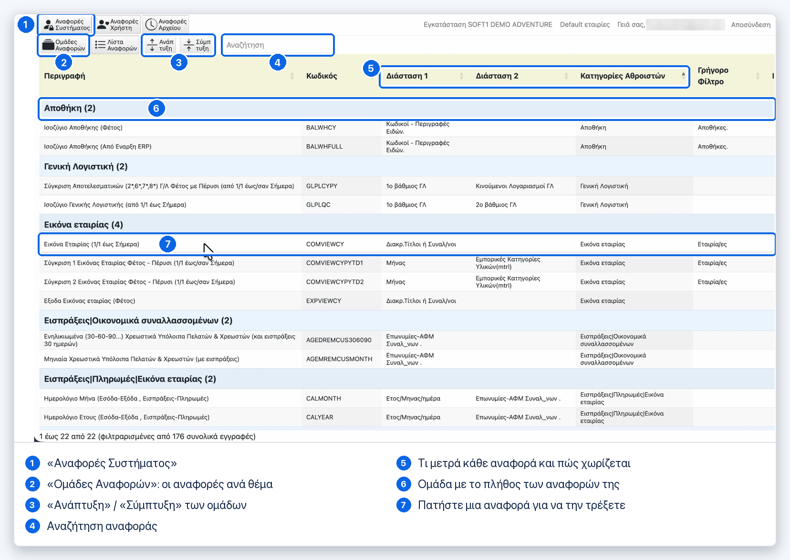

Αναφορές Συστήματος
Οι Αναφορές Συστήματος είναι η έτοιμη βιβλιοθήκη του MARS. Τις τρέχετε όπως είναι ή τις χρησιμοποιείτε ως βάση για δικές σας.
Τι κάνει#
Μόλις συνδεθείτε, οι Αναφορές Συστήματος σας δίνουν έτοιμες αναφορές για τις συνηθισμένες ερωτήσεις μιας επιχείρησης. Δεν χρειάζεται να στήσετε τίποτα από την αρχή.
Μερικές αναφορές ανήκουν μόνο στη δική σας εγκατάσταση. Στη λίστα φαίνονται με κατηγορία «CUSTOM».
Πότε το χρησιμοποιώ#
- Ως νέος χρήστης: ψάχνετε στις Αναφορές Συστήματος πριν φτιάξετε οτιδήποτε. Πιθανότατα η αναφορά που θέλετε υπάρχει.
- Ως βάση: βρίσκετε μια αναφορά που είναι «σχεδόν» αυτό που θέλετε, αλλάζετε διάσταση ή περίοδο και την κρατάτε στις Αναφορές Χρήστη.
Βήματα#
- Πατήστε Αναφορές Συστήματος.
- Με Ομάδες Αναφορών βλέπετε τις αναφορές ανά θέμα. Με Ανάπτυξη ανοίγουν όλες οι ομάδες.
- Η στήλη Κατηγορίες Αθροιστών δείχνει τι μετρά κάθε αναφορά. Οι στήλες Διάσταση 1 και Διάσταση 2 δείχνουν πώς χωρίζεται.
- Πατήστε μια αναφορά για να την τρέξετε από τις Γρήγορες επιλογές.
- Για να την προσαρμόσετε, πατήστε το γρανάζι, αλλάξτε ό,τι θέλετε, πατήστε Εμφάνιση Αναφοράς και μετά Προσθήκη σε Αναφορές Χρήστη.

Συμβουλές και συχνά λάθη#
- Δεν μπορώ να αλλάξω μια αναφορά συστήματος. Αλλάζει μόνο ο διαχειριστής. Εσείς κρατάτε τη δική σας εκδοχή στις Αναφορές Χρήστη.
- Αν ο διαχειριστής βελτιώσει μια αναφορά συστήματος, οι αναφορές χρήστη που φτιάξατε από αυτήν δεν αλλάζουν. Είναι ανεξάρτητα αντίγραφα.
- Δεν βλέπετε μια αναφορά που αναφέρει το εγχειρίδιο; Η λίστα δείχνει μόνο αναφορές με αθροιστές στους οποίους έχετε πρόσβαση.
Σας βοήθησε αυτό το άρθρο;